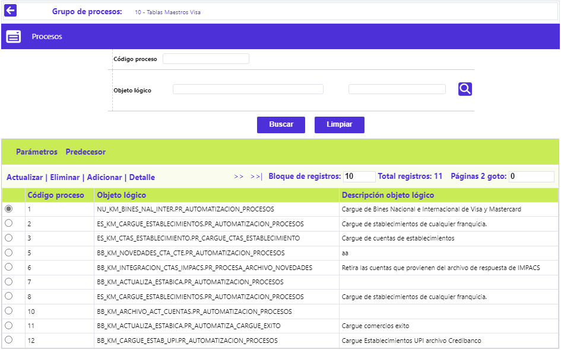
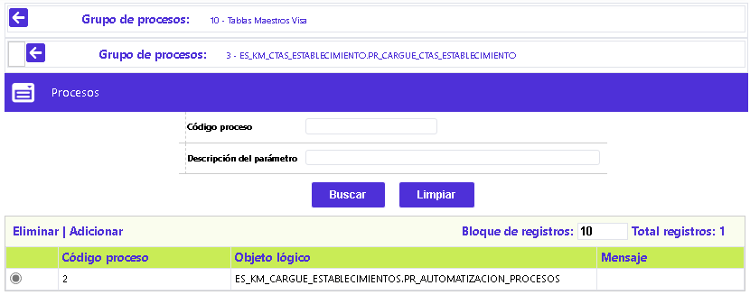
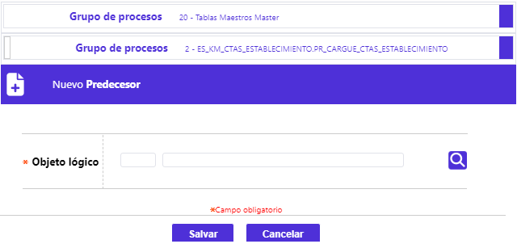

Definición grupos de procesos
A través de este formulario se habilita el mantenimiento y consulta de la data de la parametrización de los diferentes grupos de procesos, conformados por procedimientos con idéntica periodicidad de ejecución y que, funcional o lógicamente, la entidad acorde con sus criterios, desee hacer concordar; esta secuencialidad facilita la definición de precedencia, tanto a nivel de grupo como de procesos, dando la posibilidad de priorizarlos e interrelacionarlos y determinar para cada grupo, los procesos específicos que los conforman. El formulario cuenta con un filtro que le permite al usuario hacer consultas selectivas por el código del grupo y nombre del grupo. Adicionalmente, cuenta con los siguientes enlaces: Procesos y Predecesor, Actualizar, Eliminar, Adicionar y Detalle.

Adicionar: Al activar ese enlace se despliega el siguiente formulario:

Descripción de campos
Código grupo |
Campo numérico de cuatro dígitos, obligatorio, en el que se registra la serie o número que identifica cada uno de los grupos de procesos. |
Nombre grupo |
Campo numérico de cuatro dígitos, obligatorio, en el que se registra la serie o número que identifica cada uno de los grupos de procesos. |
| Frecuencia | Campo obligatorio que posee lista de valores tipo combo, de la cual se debe seleccionar entre: Diario, Semanal, Mensual, Anual o Facturación, la frecuencia con la cual deberían ser ejecutados los procesos del grupo. La combinatoria entre el valor aquí señalado y los valores de los campos: Fecha próxima ejecución, Último día hábil y Día del periodo, determinarán que aparezcan o no dentro de la opción Ejecución de procesos para una fecha determinada. |
Ultimo día hábil |
Este campo se activa únicamente cuando la periodicidad seleccionada es semanal, mensual o anual, y contiene un combo con las opciones Si o No, para indicarle al sistema, si ejecuta dicho grupo de procesos el último día hábil bien sea de la semana, del mes o del año o, se ejecuta en un día diferente. |
|
Día del periodo |
Campo que solamente se activa cuando tanto la periodicidad sea: Semanal, Mensual o Anual, como el campo Último día hábil sea No. En él, debe señalarse el número del día dentro del periodo correspondiente, en que se requiera ejecutar el grupo. |
Obligatorio |
En este campo tipo combo obligatorio se indica Si o No, el grupo es obligatorio o no el ser ejecutado. |
|
Número Maximo de Corridas |
Campo obligatorio, numérico, en el que en máximo dos dígitos, se determina la cantidad de veces que el sistema permite que el grupo pueda ejecutarse dentro de una misma fecha de proceso. |
Fecha próxima ejecución |
Campo obligatorio, que ofrece la funcionalidad de un calendario en el que se debe seleccionar, acorde con la periodicidad y fechas hábiles, la siguiente fecha en que debe ser ejecutado el grupo. |
|
Iniciar con confirmación |
Campo que se activa y transforma en obligatorio, cuando el campo Obligatorio tiene valor Si, en éste se indica Si o No, el grupo requiere confirmación para iniciar su ejecución, esto para poder chequear o hacer algunas validaciones dentro del cierre diario determinadas por la entidad. |
Actualizar: si el usuario selecciona un registro e invoca ese enlace, se despliega un formulario en el cual el único campo No modificable es el Código grupo:

Detalle: Al activar ese enlace se despliega un formulario con la información del registro, en el cual ninguno de sus campos es modificable:

Procesos: Al activar ese enlace se despliega un nuevo formulario en el que se registran los procesos que componen o integran cada uno de los grupos definidos. El formulario contiene los enlaces: Parametros y Predecesor, Actualizar, Eliminar, Adicionar y Detalle.

Adicionar: Al Activar ese enlace se despliega un formulario con los siguientes campos:

Descripción de campos
Código proceso |
Campo obligatorio, numérico de 3 dígitos, en el que se define el código a asignar al nuevo proceso que se está parametrizando. |
Objeto lógico |
Campo obligatorio que posee lista de valores poblada en la opción Definición objetos lógicos de la cual se debe el programa correspondiente a parametrizar. |
Descripción objeto lógico |
Campo alfanumérico obligatorio, de 80 caracteres, en el que se debe registrar una breve descripción de la función que cumple el proceso a parametrizar. |
Frecuencia |
Campo obligatorio que posee lista de valores tipo combo, de la cual se debe seleccionar entre: Diario, Semanal, Mensual, Anual o Facturación, la frecuencia con la cual deberá ser ejecutado el proceso. La combinatoria entre el valor aquí señalado y los valores de los campos: Fecha próxima ejecución, Último día hábil y Día del periodo, determinarán que aparezcan o no dentro de la opción Ejecución de procesos para una fecha determinada. |
|
Ultimo día hábil |
Este campo se activa únicamente cuando la periodicidad seleccionada es semanal, mensual o anual, y contiene un combo con las opciones Si o No, para indicarle al sistema, si ejecuta dicho proceso el último día hábil bien sea de la semana, del mes o del año o, se ejecuta en un día diferente. |
|
Día del periodo |
Campo que solamente se activa cuando tanto la periodicidad sea: Semanal, Mensual o Anual, como el campo Último día hábil sea No. En él, se debe registrar el número del día dentro del periodo correspondiente, en que se requiera ejecutar el proceso. |
|
Requerido |
Campo en el que se señala si el proceso tiene la condición de obligatorio o no, lo que es evaluado por el sistema al momento de hacer el cambio de calendario, para no permitir la acción hasta tanto todos los procesos obligatorios hayan sido lanzados y su estado sea Ejecución total. |
|
Número Maximo de Corridas |
Campo numérico obligatorio, en el que, en máximo dos dígitos, se determina la cantidad de veces que el sistema permite que el proceso pueda ejecutarse dentro de una misma fecha de proceso. |
|
Fecha próxima ejecución |
Campo obligatorio, que ofrece la funcionalidad de un calendario en el que se debe seleccionar, acorde con la periodicidad y fechas hábiles para Banca, la siguiente faech en que debe ser ejecutado el proceso. |
Actualizar: Al activar ese enlace se despliega un formulario en el cual los campos modificables son: Descripción objeto lógico, Número Máximo de Corridas y Fecha próxima ejecución:

Parámetros: Al activar ese enlace, se despliega un nuevo formulario en el cual la entidad puede asociar los valores de los datos o variables, que debe tener en cuenta el sistema al momento de ejecutar cada uno de los procesos. Además del filtro de búsqueda, el formulario contiene los enlaces: Actualizar, Eliminar y Adicionar.

Adicionar: Al activar ese enlace se despliega el siguiente formulario:

Descripción de campos
Posición |
Campo numérico de tres dígitos, obligatorio, en el que debe registrarse el mismo valor, asociado al parámetro, dentro del programa. |
Descripción del parámetro |
Campo alfanumérico obligatorio, en el que debe registrarse una breve descripción del parámetro asociado al proceso. |
Tipo de parámetro |
Campo que posee lista de valores tipo combo, de la cual se puede seleccionar entre: Archivo de entrada, Archivo de salida o No es archivo, la característica propia del parámetro. |
Valor parámetro |
En este campo se registra el valor asociado al parámetro dentro del programa, como por ejemplo el nombre con el cual se va a reconocer un archivo a cargar o archivo de salida. |
Nombre parámetro |
Campo que aplica para los reportes, y corresponde a parámetros diferentes al de: Empresa, Idioma, Nombre del reporte y Usuario, y que se deben ubicar dentro del programa. |
Actualizar: Al activar ese enlace se despliega un formulario en el cual el único campo No modificable es la Posición:

Predecesor:Desde la misma forma es el conjunto de datos que permiten definir los procesos que deben ser ejecutados previamente o como prerrequisito para poder ejecutar un proceso determinado.

Descripción de campos
|
Código de proceso |
Contiene el número de la secuencia asociada al objeto lógico de cada proceso definido como predecesor del que se está parametrizando. |
|
Objeto lógico |
Campos de salida que muestran tanto la secuencia como el nombre del objeto lógico y su descripción, asociados al proceso al que se le están definiendo sus predecesores. |
|
Mensaje |
Campo que describe el resultado de la ejecucion. |
Predecesor: Grupo de características que permiten definir relaciones de dependencia para la ejecución entre los diferentes grupos; usualmente se establecen en orden ascendente o de menor a mayor.

Descripción de campos
Código grupo |
Campo de salida que indica el grupo, al cual se le van a asociar otro(s) grupo(s) como predecesor(es). |
Descripción |
Una vez diligenciado el campo anterior, este espacio se llena automáticamente con la descripción de cada uno de los grupos seleccionados como predecesores. |